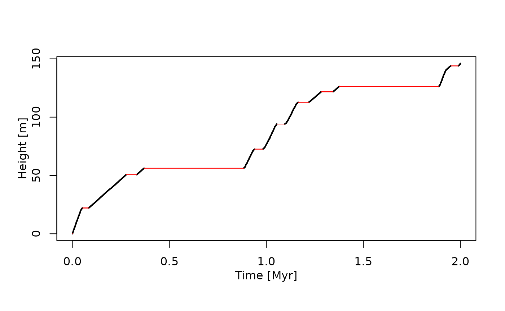

Introduction
This vignette is an introduction to the admtools package.
Installation
From GitHub
To install the package from GitHub, first install the remotes package:
install.packages("remotes")Then run
remotes::install_github(repo = "MindTheGap-ERC/admtools",
build_vignettes = TRUE,
ref = "v0.1.0")to install the latest release. To install the version in development,
use ref = "HEAD" instead.
Getting help
Use
help(package = "admtools")to get an overview of the available help pages of the package, and
?admtoolsto view a simple help page for the package.
Vignettes are a long form of package documentation that provide more detailed examples. To list the available vignettes, use
browseVignettes(package = "admtools") # opens in Browser
#or
vignette(package = "admtools")The adm and multiadm classes
The admtools package defines two main classes:
adm and multiadm. The class adm
represent a single age-depth model, from which information can be
extracted (e.g. completeness, number of hiatuses, etc.) and that can be
used to transform data between the stratigraphic domain and time domain.
The multiamd class is a list of adm objects.
multiadm objects are used to represent uncertainties of
age-depth models.
Conventions
In contrast to its name, the admtools package currently deals with time and height instead of age and depth. In this sense, the age-depth models are time-height models. Both time and height can be negative values. To handle ages, use time before the present. To handle depths, use height below a point of reference (e.g., the sediment surface).
Example
This example explains the construction and application of
adm objects. As example data we use outputs from CarboCAT
Lite, a model of carbonate platform growth (Burgess 2013, 2023). This
data is automatically loaded in the background by the package. To
inspect it, you can load it into your workspace via
data("CarboCATLite_data")
#> Warning in data("CarboCATLite_data"): data set 'CarboCATLite_data' not foundDefining age-depth models
The standard constructor for age-depth models is
tp_to_adm (“tiepoint to age-depth model”). It returns an
objecto of class adm. This object combines information of
stratigraphic heights and times and erosive interval. It allows to
transform data between the stratigraphic and the time domain, and
identify which data is destroyed due to hiatuses.
As example, I use the timing and stratigraphic positions of tie points taken from CarboCAT Lite to construct an age-depth model, and use the option to directly associate length and time units with it.
# see ?tp_to_adm for detailed documentation
my_adm = tp_to_adm(t = CarboCATLite_data$time_myr,
h = CarboCATLite_data$height_2_km_offshore_m,
L_unit = "m",
T_unit = "Myr")This age-depth model represents the relationship between elapsed model time and accumulated sediment 2 km offshore in a synthetic carbonate platform.
Representation
Typing the name my_adm in the console will only tell
that the generated variable is an age-depth model
my_adm
#> Age-depth modelTo get a quick overview of the properties of my_adm, use
summary:
summary(my_adm)
#> age-depth model
#> Total duration: 2 Myr
#> Total thickness: 146.0621 m
#> Stratigraphic completeness: 32.65 %
#> 10 hiatus(es)If you want to inspect the insides of the object, use
str:
str(my_adm)
#> List of 5
#> $ t : num [1:2001] 0 0.001 0.002 0.003 0.004 0.005 0.006 0.007 0.008 0.009 ...
#> $ h : num [1:2001] 0 0 0.609 1.095 1.722 ...
#> $ destr : logi [1:2000] TRUE FALSE FALSE FALSE FALSE FALSE ...
#> $ T_unit: chr "Myr"
#> $ L_unit: chr "m"
#> - attr(*, "class")= chr "adm"You can manually manipulate the fields of the adm object
by treating it like a list. I do not recommend doing so, as it might
result in unexpected behavior.
You can plot adm objects via the standard
plot function. Here, I use the option to highlight hiatuses
in red, and increase the linw width of the conservative ( =
non-destructive) intervals.
# see ?plot.adm for plotting options for adm objects
plot(my_adm,
col_hiat = "red",
lwd_cons = 2)
Extracting data from age-depth models
Use the functions get_total_duration,
get_total_thickness, get_completeness, and
get_hiat_no to extract information:
get_total_duration(my_adm) #total time covered by the age-depth model
#> [1] 2
get_total_thickness(my_adm) # total thickness of section represented by the amd
#> [1] 146.0621
get_completeness(my_adm) # stratigraphic completeness as proportion
#> [1] 0.3265
get_incompleteness(my_adm) # stratigraphic incompleteness (= 1- strat. incompleteness)
#> [1] 0.6735
get_hiat_no(my_adm) # number of hiatuses
#> [1] 10For more detailed information, you can use
-
get_hiat_durationto get a vector of hiatus durations -
get_hiat_listto get a list of hiatus positions and duration.
For example, to plot a histogram of hiatus durations, use
hist(x = get_hiat_duration(my_adm),
freq = TRUE,
xlab = "Hiatus duration [Myr]",
main = "Hiatus duration 2 km offshore")The function is_destructive can be used to examine
whether points in time coincide with hiatuses:
is_destructive(my_adm,
t = c(0.1,0.5))
#> [1] FALSE TRUETransforming data between time and stratigraphic domain
Heights and times
The functions get_height and get_time are
the workhorses to transform data using age-depth models.
-
get_timetakes and adm object and vector of heightsh(stratigraphic positions), and returns a vector of times -
get_heighttakes an adm object and vector of times and returns a vector of associated positions
As example, say we want to know the time of deposition of the following stratigraphic positions:
Conversely, to determine what parts of the section are deposited as a specific time, use
t = c(0.2,1.4)
get_height(my_adm,
t = t)
#> [1] 39.13951 NAHere, the NA indicates that the time 1.4 coincides with
erosion. If you want to know the stratigraphic position of the hiatus
that coincides with that time, use the option
destructive = FALSE:
t = c(0.2,1.4)
get_height(my_adm,
t = t,
destructive = FALSE)
#> [1] 39.13951 126.27764Phylogenetic trees
The admtools package can transform complex objects
between the time and stratigraphic domain. This is done using the
functions strat_to_time and time_to_strat.
As an example, we transform a chronogram (a phylogenetic tree where
branch length represents time). For this, we first generate a tree
following the birth-death model using the ape package.
#install.packages("ape") Package for analyses of phylogenetics and evolution
# see ?ape::rlineage for help
set.seed(1)
tree_in_time = ape::rlineage(birth = 1.8,
death = 0.2,
Tmax = 2)
plot(tree_in_time) # see also ?ape::plot.phylo
axis(1)
mtext("Time [Myr]", side = 1, line = 2.5)
You can transform the tree using time_to_strat:
tree_in_strat_domain = time_to_strat(obj = tree_in_time,
x = my_adm)Plotting the resulting tree along the tratigraphic column shows how the evolutinoary relationships would be preserved 2 km offshore in the simulated carbonate platform:
Further information
For information on estimating age-depth models from sedimentation rates, see
vignette("adm_from_sedrate")For information on estimating age-depth models from tracer contents of rocks and sediments, see
vignette("adm_from_trace_cont")References
- Burgess, Peter. “CarboCAT: A cellular automata model of heterogeneous carbonate strata.” Computers & geosciences 53 (2013): 129-140. DOI: 10.1016/j.cageo.2011.08.026
- Burgess, Peter. “CarboCAT Lite v1.0.1”. Zenodo 2023. DOI: 10.5281/zenodo.8402578